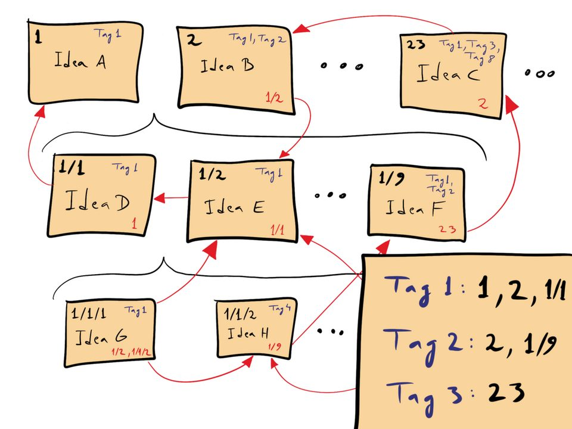

Obsidian（オブシディアン）の始め方と注意点：料金・同期・バックアップ（2026年版）
要点まとめ
Obsidian（オブシディアン）は、ノートを自分の端末に「Markdown」という文字だけのファイルで保存するノートアプリです。この記事では、無料で使える範囲と有料サービスの料金、始め方、主な機能、プラグインの注意点、複数の端末で使う方法、バックアップ、ほかのノートアプリとの違い、データの移行をまとめました。公式サイトと公式ヘルプを中心に調べています。価格や機能は変わるので、数字は調査日時点のものです。特定のアプリやサービスをすすめるものではありません。
Obsidian とは：ノートは端末内のファイル
ノートは自分の端末に、文字だけのファイルで残る
データは端末内。公式は利用状況を集めないと明記
料金：無料の範囲と、お金がかかるもの
アプリは無料。お金がかかるのは同期と公開サイト
個人も仕事も無料（2025年2月から商用も無料）[2][29]
| サービス | 価格 | 内容 |
|---|---|---|
| Obsidian 本体 | 無料 | 登録不要。個人・商用・非営利のすべてで無料[2][3] |
| Sync Standard | 月$4（年払い）／月$5（月払い） | 保管庫1つ、1GB、1ファイル5MBまで、履歴1か月[3][30] |
| Sync Plus | 月$8（年払い）／月$10（月払い） | 保管庫10、10GB（100GBまで拡張可）、200MB、履歴12か月[3][30] |
| Publish | 月$8（年払い）／月$10（月払い）、サイトごと | ノートを Web サイトとして公開。4GBまで[31] |
| Catalyst | $25から（一回払い） | 開発を支援するライセンス。ベータ版の早期利用など[3][32] |
| Commercial | 年$50／人（任意） | 仕事で使う組織向けの支援ライセンス。機能の差はない[3][29] |
見方: 1人で、1台のPCだけで使うなら0円です。スマホとPCで同じノートを使いたいときに、公式の Sync（月$4から）か、iCloud などの別の方法（6章）が必要になります。
始め方：インストールからノートをつなぐまで
保管庫（フォルダ）を作り、ノートどうしをリンクする
保管庫の置き場所は、クラウドの同期フォルダの外が公式のおすすめ[35]
- 1
インストールする
obsidian.md/download から各OSの版を入れる。Windows・Mac は「Universal」[36][17]
- 2
保管庫を作る
「Create new vault（保管庫を新規作成）」で名前と場所を決める[37]
- 3
最初のノートを書く
Ctrl+N（Mac は Cmd+N）で新規ノート。# で見出し、Ctrl+B で太字[38]
- 4
ノートをつなぐ
本文で角かっこ「[」を2回打ち、ノート名を選ぶ。存在しないノートへのリンクも作れる[39]
- 5
つながりを見る
右サイドバーの「バックリンク」で、どのノートから参照されているかが分かる[39]
- 6
毎日の記録を始める
コアプラグイン「デイリーノート」をオンにすると、今日の日付のノートを1操作で開ける[40]
主な機能

リンク・タグ・プロパティで、ノートを探しやすくする
標準の機能だけで、リンク・検索・図・表形式の一覧まで使える[41]
| 機能 | できること |
|---|---|
| 内部リンク・バックリンク | ノート名で相互にリンク。逆方向の参照も自動で一覧になる[42] |
| タグ | #読書 のように本文に書く。/ で階層にできる[43] |
| プロパティ | ノートの先頭に、日付や状態などの項目を持たせる[44] |
| テンプレート | 日付などの変数が入った定型文を差し込む[45] |
| 検索 | 完全一致、除外、タグやプロパティでの絞り込み[46] |
| グラフビュー | ノートのつながりを図で見る[47] |
| キャンバス | ノートや画像を自由に並べて線でつなぐ。.canvas 形式[48] |
| Bases（ベース） | プロパティをもとに、ノートを表・カード・かんばんで一覧する（2025年8月から標準）[49][50] |
| Web Clipper | ブラウザ拡張で Web ページをノートに保存（Chrome・Firefox・Safari・Edge）[51] |
プラグインの注意点
コミュニティプラグインは便利だが、自分の責任で使う
約1万個。初期設定の「制限モード」を外すと使える[5][53]
くわしく
- コアプラグイン（公式同梱）は約30種。バックリンク、デイリーノート、ファイルリカバリー、Sync など[41]
- コミュニティプラグインは9,966個、テーマは977個（2026年11月5日時点）[5]
- 有効化は設定の「コミュニティプラグインをオンにする」→ Browse → Install → Enable[53]
- プラグインは Obsidian と同じ権限を持ち、PC のファイル・インターネット・プログラムの追加に手が届く[6]
- 公式は全バージョンを自動スキャンし、人気のあるものや通報があったものは人手でも審査する[6]
- 安全のため自動更新はされない。「Check for updates」で自分で更新する[53]
- 2026年5月の公式ブログで、安全性のスコアカードや権限の開示を進めると発表した[54]
機密のノートを扱うなら
公式は「作者を信頼できるプラグインだけを入れるときに制限モードを解除する」よう求め、プラグインごとに権限を絞ることは技術的にできないと説明しています[6]。仕事の機密を書くなら、制限モードのままにするか、入れるプラグインを最小限にするのが無難です（筆者の見解）。
複数の端末で使う（同期）
公式の Sync が最も簡単。iCloud などは条件つき
| 方法 | 向くOS | 注意 |
|---|---|---|
| Obsidian Sync（有料） | 全OS | 暗号化して公式サーバー経由。Obsidian を起動している間だけ同期[34] |
| iCloud Drive | Mac・iPhone・iPad | Windows の iCloud は重複・破損のおそれ。iPhone では iCloud Drive/Obsidian の下に置く |
| OneDrive | Windows・Mac | 「常にこのデバイス上に保持」にする。iPhone は公式非対応 |
| Google Drive | Windows・Mac・Android | 公式サポート外。iPhone は非対応 |
| Git | PC | 手動で push / pull。自動では同期されない |
| Syncthing | PC | クラウドを介さず端末どうしで直接同期 |
バックアップと復元
「同期はバックアップではない」と公式が明記
誤削除は「ファイルリカバリー」で7日分戻せる[8]
くわしく
- 公式は Sync・iCloud・OneDrive などを「バックアップ用に設計されていない」と説明[7]
- 保管庫フォルダを外付けドライブや USB メモリにコピーするだけでもバックアップになる[7]
- OS 標準の機能（Windows のバックアップ、Mac の Time Machine）も案内されている[7]
- プラグイン「Obsidian Git」「Local Backup」も挙げられているが、公式が保証するものではない[7]
- ファイルリカバリーは5分おきに記録し7日間保持（設定で変更可）。.md と .canvas が対象[8]
- この記録は端末内に置かれ、Sync では端末間で共有されない[8]
- Sync のバージョン履歴は Standard 1か月、Plus 12か月[56][30]
- 削除したノートの行き先は、OS のごみ箱・保管庫内の .trash・完全削除から選べる[57]
ほかのノートアプリとの違い
保存場所と共同編集が、いちばんの違い
Obsidian は端末内、Notion などは運営のクラウドに保存[11][10]
| アプリ | 保存場所 | 形式 | 無料の範囲 | 有料 | 同時編集 |
|---|---|---|---|---|---|
| Obsidian | 端末内のフォルダ | Markdown | 制限なし | Sync 月$4から | 同じファイルの同時編集は不可。共有は全員が Sync 契約、20人まで[9] |
| Notion | 運営のクラウド[10] | 独自。PDF・HTML・Markdown に書き出し[58] | 1人なら無制限。複数人は上限あり | Plus 月1,650円／人[59] | 可 |
| Evernote | 運営のクラウド | 独自 | ノート50・ノートブック1・端末1台[60] | 不明（表示を確認できず） | 不明 |
| Apple メモ | iCloud[61] | 独自。Mac で PDF・Markdown に書き出し[62] | Apple 端末に標準搭載 | — | ほぼリアルタイム[63] |
| Google Keep | Google のクラウド | 独自 | Google アカウントで利用 | — | リアルタイム[64] |
| Joplin | 端末内（データベース）[65] | Markdown。JEX・HTML・PDF に書き出し | オープンソースで無料[66] | Joplin Cloud 月2.99ユーロから[67] | Cloud 経由で可 |
| Logseq | 端末内 | Markdown／Org-mode[68] | オープンソースで無料 | 支援者向けの同期（試験段階） | 開発中 |
見方: 何人かで同じページを同時に編集するのが主なら Notion や Google Keep、1人で長く使うノートを自分のファイルとして持ちたいなら Obsidian や Joplin が向いています（筆者の見解）。
ほかのアプリからの移行と、データの持ち出し
公式の Importer で、主要なアプリから取り込める
Notion や Evernote など、主要なアプリに対応[70]
今回確認できなかった点
- Windows・Mac 版に必要な OS のバージョン（公式ページに記載なし）
- 表示価格が税込かどうか、日本円での請求額
- Evernote の有料プランの価格
- Bases がスマホ版でどこまで使えるか
- 日本語版の公式ヘルプが、英語版と同じ内容に更新されているか
出典（74件）
閲覧日はいずれも2026年11月5日
- Obsidian - Sharpen your thinking（トップページ）（Obsidian（公式サイト））
- License overview（2025年2月20日更新）（Obsidian（公式サイト））
- Pricing（Obsidian（公式サイト））
- Sync your notes across devices（Obsidian（公式ヘルプ））
- Make Obsidian yours（プラグイン・テーマの一覧）（Obsidian（公式コミュニティディレクトリ））
- Plugin security（Obsidian（公式ヘルプ））
- Back up your Obsidian files（Obsidian（公式ヘルプ））
- File recovery（Obsidian（公式ヘルプ））
- Collaborate on a shared vault（Obsidian（公式ヘルプ））
- Security（Notion（公式））
- How Obsidian stores data（Obsidian（公式ヘルプ））
- Terms of service（2025年2月20日更新）（Obsidian（公式サイト））
- About（Obsidian（公式サイト））
- Changelog（最初のページ: 0.0.1 Desktop、2020年3月30日）（Obsidian（公式サイト））
- Obsidian 1.0.0 Desktop (Public)（2022年10月13日）（Obsidian（公式サイト））
- Obsidian 1.15 Desktop (Public)（2026年11月2日）（Obsidian（公式サイト））
- Download（Obsidian（公式サイト））
- Obsidian for Android（Obsidian（公式ヘルプ））
- Obsidian - Connected Notes（Apple App Store（Obsidian 公式配布））
- obsidian-translations（対応言語の一覧）（Obsidian（公式 GitHub））
- Obsidian ヘルプ（Obsidian（公式ヘルプ 日本語版））
- Obsidian Flavored Markdown（Obsidian（公式ヘルプ））
- Accepted file formats（Obsidian（公式ヘルプ））
- Open Sourcing of Obsidian（Obsidian（公式フォーラム。共同創業者の回答、2020年8月4日））
- Privacy policy（2023年11月1日更新）（Obsidian（公式サイト））
- Security（Obsidian（公式サイト））
- Obsidian Sync: Security and privacy（Obsidian（公式ヘルプ））
- Obsidian Publish: Security and privacy（Obsidian（公式ヘルプ））
- Obsidian is now free for work（2025年2月20日）（Obsidian（公式ブログ））
- Obsidian Sync: Plans and storage limits（Obsidian（公式ヘルプ））
- Obsidian Publish（Obsidian（公式サイト））
- Catalyst license（Obsidian（公式ヘルプ））
- 人気のMarkdownノートアプリ「Obsidian」が商用でも無償に（2025年2月21日）（窓の杜（Impress Watch））
- Obsidian Sync: Frequently asked questions（Obsidian（公式ヘルプ））
- Switch to Obsidian Sync（保管庫の推奨場所）（Obsidian（公式ヘルプ））
- Download and install Obsidian（Obsidian（公式ヘルプ））
- Create a vault（Obsidian（公式ヘルプ））
- Create your first note（Obsidian（公式ヘルプ））
- Link notes（Obsidian（公式ヘルプ））
- Daily notes（Obsidian（公式ヘルプ））
- Core plugins（Obsidian（公式ヘルプ））
- Internal links（Obsidian（公式ヘルプ））
- Tags（Obsidian（公式ヘルプ））
- Properties（Obsidian（公式ヘルプ））
- Templates（Obsidian（公式ヘルプ））
- Search（Obsidian（公式ヘルプ））
- Graph view（Obsidian（公式ヘルプ））
- Canvas（Obsidian（公式ヘルプ））
- Introduction to Bases（Obsidian（公式ヘルプ））
- Obsidian 1.9.10 Desktop (Public)（2025年8月18日）（Obsidian（公式サイト））
- Introduction to Obsidian Web Clipper（Obsidian（公式ヘルプ））
- Obsidian 1.9.0 Desktop (Early access)（2025年5月21日）（Obsidian（公式サイト））
- Community plugins（Obsidian（公式ヘルプ））
- The future of Obsidian plugins（2026年5月12日）（Obsidian（公式ブログ））
- Troubleshoot Obsidian Sync（競合の処理）（Obsidian（公式ヘルプ））
- Obsidian Sync: Version history（Obsidian（公式ヘルプ））
- Manage notes（削除したノートの行き先）（Obsidian（公式ヘルプ））
- Export your content（Notion（公式ヘルプ））
- 料金プラン（Notion（公式））
- プラン比較（Evernote（公式））
- iCloudでメモを最新の状態に保ち、共有する（Apple（公式））
- Macでメモを読み込む/書き出す/プリントする（Apple（公式））
- Macの「メモ」でメモを共有する/共同作業する（Apple（公式））
- Google Keep 製品ページ（Google Workspace（公式））
- FAQ（Joplin（公式））
- Joplin（トップページ）（Joplin（公式））
- Joplin Cloud Plans（Joplin（公式））
- logseq/logseq README（Logseq（公式 GitHub））
- 「Evernote」無料プランの上限変更が正式決定、導入は12月4日から（2023年11月30日）（窓の杜（Impress Watch））
- Import notes（Obsidian（公式ヘルプ））
- Import from Notion（Obsidian（公式ヘルプ））
- Import from Evernote（Obsidian（公式ヘルプ））
- Import from Apple Notes（Obsidian（公式ヘルプ））
- PDFs（Export a note to PDF）（Obsidian（公式ヘルプ））
写真・画像の出典（2件）
- 紙のカードで知識をためる資料庫の例
写真: Michiel Streijger／Wikimedia Commons（CC BY 4.0） - ノートに番号とタグを付け、リンクでつなぐ考え方の図
図: David B. Clear／Wikimedia Commons（CC BY-SA 4.0）